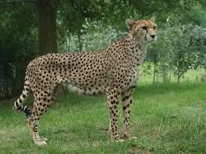
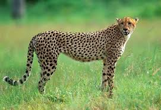
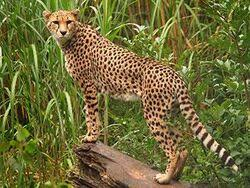
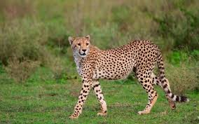
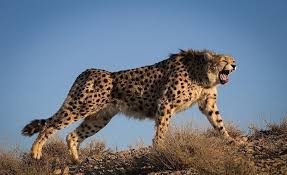

The cheetah is a large cat species and the fastest land animal. It is a non-pantherine cat species among big cats. The cheetah has pale buff fur or a tawny to creamy white coat that is marked by evenly spaced, solid black spots. It has a small, rounded head, with a short nose and black tear-like facial streaks. Cheetahs' grow their body up to 1.5 m.
The reality is cheetahs can't roar. They can only purr, chirps, hiss and meow. Their sound is kind of cute as domestic cats.
Cheetah Meow Cheetah Purr Cheetah ChirpThere are five subspecies of cheetah. They are:
Among these subspecies, South African cheetah is the largest cheetah subspecies
Here's a video showcasing some of the Cheetah subspecies:
| Image | Name of the Subspecies | Living Area |
|---|---|---|
|  | Northwest African cheetah (Acinonyx jubatus hecki) | Western and central Sahara and the Sahel, Niger |
|  | South African cheetah (Acinonyx jubatus jubatus) | Lowland areas and deserts of the Kalahari, savannahs of Okavango Delta, and grasslands of the Transvaal region in South Africa, Namibia |
|  | Northeast African cheetah (Acinonyx jubatus soemmerringi) | Wide open lands, grasslands, semi-arid areas in Northeast Africa, Ethiopia, and South Sudan |
|  | East African cheetah (Acinonyx jubatus fearsoni) | Grasslands and savannas of Tanzania, Kenya, Uganda, and Somalia |
|  | Asiatic cheetah (Acinonyx jubatus venaticus) | Desert areas around Dasht-e Kavir in the eastern half of Iran (Kerman, Khorasan, Yazd, Markazi, Tehran, and Semnan provinces) |
The following map represents the habitat of cheetahs.
Majority of cheetahs live in Africa. We can find cheetahs from:
.JPG)
There are 427 cheetahs live in this national park.
Kruger National Park is one of South Africa's most famous and popular national parks, renowned for its diverse wildlife and stunning landscapes. It's home to a variety of animals, including elephants, lions, buffaloes, leopards, and rhinoceroses. The park also offers breathtaking views of the Sabie River and the Drakensberg Mountains.
Find moreThere are less than 50 cheetahs in this national park.
Etosha National Park is a vast and diverse protected area in Namibia, famous for its salt pan, wildlife, and stunning landscapes.
Find more.JPG)
There are approximately 300 cheetahs live in this national park.
Masai Mara National Reserve is one of Kenya's most famous and popular national parks, renowned for its annual Great Migration of wildebeest and zebras. The reserve is also home to a variety of other animals, including lions, elephants, buffaloes, leopards, and giraffes.
Find moreThere are approximately 550 cheetahs live in this national park.
Serengeti National Park is one of Tanzania's most famous and popular national parks, renowned for its annual Great Migration of wildebeest and zebras. The park is also home to a variety of other animals, including lions, elephants, buffaloes, leopards, and giraffes.
Find moreThere are around 16 cheetahs live in this national park.
Touran National Park is situated in Semnan Province, in the central desert region in Iran.
Find moreThere are 5 cheetahs live in this area.
Dar-e Anjir Wildlife Refuge is a protected area, which is situated in Semnan Province, in the central desert region in Iran.
Find moreThere are 16 cheetahs live in this area.
Naybandan Wildlife Reserve is the reserve, which has the highest population of Asiatic cheetahs. This is a national park in Iran.
Find moreDo you need more clarification?